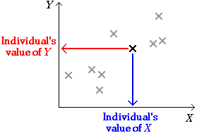

Scatterplots
A scatterplot shows each individual as a single cross against a vertical axis (for the variable, Y) and a horizontal axis (for the other variable, X).

By convention, we call the variable on the vertical axis Y and the variable on the horizontal axis X.
Salaries of managers
The table below shows the average annual salaries for Financial Managers and Human Resources Managers in the mainland states in the USA in 2012.
| State | Financial Manager |
Human Resources Manager |
|---|---|---|
| Alabama Arizona Arkansas California Colorado Connecticut Delaware DC Florida Georgia Idaho Illinois Indiana Iowa Kansas Kentucky Louisiana Maine Maryland Massachusetts Michigan Minnesota Mississippi Missouri Montana Nebraska Nevada N Hampshire New Jersey New Mexico New York N Carolina N Dakota Ohio Oklahoma Oregon Pennsylvania Rhode Is S Carolina S Dakota Tennessee Texas Utah Vermont Virginia Washington W Virginia Wisconsin Wyoming |
$108,100 $105,620 $95,070 $137,150 $135,580 $126,930 $145,130 $135,760 $124,080 $119,330 $88,570 $120,980 $101,510 $106,480 $108,570 $92,990 $91,650 $86,100 $119,710 $129,070 $104,910 $117,250 $80,610 $112,790 $96,290 $130,190 $104,290 $98,260 $145,530 $97,150 $170,370 $122,350 $99,100 $108,220 $91,010 $104,990 $123,150 $132,440 $100,200 $116,560 $99,520 $122,260 $108,650 $113,670 $130,090 $116,170 $79,460 $103,480 $92,250 |
$93,060 $94,930 $94,090 $121,190 $124,060 $117,410 $132,260 $133,550 $104,410 $114,340 $88,640 $103,440 $95,000 $89,950 $93,420 $84,240 $82,850 $81,980 $120,150 $119,060 $97,010 $106,610 $73,060 $98,180 $85,560 $110,670 $107,810 $103,750 $137,850 $89,610 $124,280 $113,170 $90,160 $103,550 $68,440 $95,140 $124,590 $120,850 $88,850 $88,160 $85,500 $112,910 $94,680 $102,950 $120,610 $108,960 $81,480 $93,480 $81,010 |
This is a bivariate numerical data set, with an additional label variable containing the names of the states.
Relationship between salaries of the two types of manager
A scatterplot of the data is shown below.
Click on any of the crosses to help read the two average salaries for that state. The general trend for states with higher financial manager salaries to also have higher human resources manager salaries is evident from the upward-sloping cloud of points.